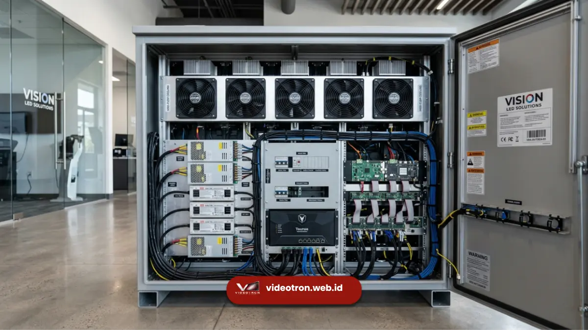

Jenis videotron untuk kebutuhan korporat di Jakarta umumnya terbagi menjadi videotron indoor dan outdoor, dengan spesifikasi teknis utama meliputi pixel pitch, tingkat kecerahan, dan resolusi layar. Pemilihan jenis dan spesifikasi yang tepat bergantung pada lokasi pemasangan serta jarak pandang audiens.
- Videotron indoor dan outdoor memiliki spesifikasi kecerahan yang berbeda
- Pixel pitch menentukan ketajaman gambar sesuai jarak pandang
- Resolusi layar disesuaikan dengan luas area dan jenis konten yang ditampilkan
- Spesifikasi yang tepat membantu videotron tampil optimal di lokasi penggunaannya
- Konsultasi teknis membantu menentukan spesifikasi paling sesuai kebutuhan korporat
Bagi perusahaan yang berencana memasang videotron di gedung perkantoran, mal, atau area publik, memahami perbedaan jenis dan spesifikasi teknis menjadi langkah penting sebelum menentukan kebutuhan akhir.
Apa Saja Jenis Videotron Berdasarkan Lokasi Penggunaannya?
Jenis videotron berdasarkan lokasi penggunaannya terbagi menjadi videotron indoor untuk ruangan tertutup dan videotron outdoor untuk area terbuka. Keduanya memiliki perbedaan spesifikasi teknis yang disesuaikan dengan kondisi lingkungan masing-masing.
Videotron Indoor
Videotron indoor dirancang untuk digunakan di dalam ruangan seperti lobi gedung, ballroom, atau ruang pamer, dengan tingkat kecerahan yang disesuaikan agar tidak menyilaukan mata dalam kondisi pencahayaan ruangan tertutup.
Videotron Outdoor
Videotron outdoor dirancang dengan tingkat kecerahan lebih tinggi serta ketahanan terhadap cuaca seperti hujan dan panas, sehingga tampilan tetap jelas terlihat meski digunakan di siang hari dengan cahaya matahari langsung.
Apa Spesifikasi Teknis Utama yang Perlu Diperhatikan?
Spesifikasi teknis utama yang perlu diperhatikan pada videotron meliputi pixel pitch, tingkat kecerahan atau brightness, resolusi layar, serta refresh rate. Kombinasi spesifikasi ini menentukan kualitas tampilan videotron sesuai kondisi penggunaannya.
Beberapa spesifikasi yang umum menjadi pertimbangan meliputi:
- Pixel pitch, yaitu jarak antar titik LED yang menentukan ketajaman gambar
- Tingkat kecerahan atau brightness, diukur dalam satuan nits
- Resolusi layar yang disesuaikan dengan ukuran dan luas area
- Refresh rate untuk memastikan tampilan konten video tetap halus
Menurut data teknis industri LED display, videotron outdoor umumnya membutuhkan tingkat kecerahan pada kisaran 5.000 hingga 8.000 nits agar tetap terlihat jelas di bawah sinar matahari langsung, sementara videotron indoor umumnya cukup menggunakan kecerahan pada kisaran 800 hingga 1.500 nits.
Bagaimana Cara Menentukan Spesifikasi Sesuai Kebutuhan Lokasi?
Cara menentukan spesifikasi videotron yang sesuai kebutuhan lokasi adalah dengan mempertimbangkan jarak pandang audiens, kondisi pencahayaan lokasi, serta jenis konten yang akan ditampilkan.
Semakin jauh jarak pandang, pixel pitch yang lebih besar biasanya masih dapat memberikan tampilan optimal.
Beberapa pertimbangan dalam menentukan spesifikasi meliputi:
- Jarak pandang rata-rata audiens terhadap layar videotron
- Kondisi pencahayaan di lokasi, baik indoor maupun outdoor
- Jenis konten yang akan ditampilkan, seperti teks, gambar, atau video
- Luas area yang tersedia untuk pemasangan layar

Apa Peran Sistem Kontrol dalam Videotron?
Sistem kontrol videotron berperan mengatur konten yang ditampilkan, termasuk penjadwalan tayangan dan pengaturan kecerahan otomatis sesuai kondisi cahaya sekitar.
Sistem ini menjadi komponen penting agar operasional videotron berjalan efisien dalam jangka panjang.
Untuk membantu perusahaan menentukan jenis dan spesifikasi videotron yang paling sesuai dengan kebutuhan korporat, tim vendorvideotron.web.id menyediakan konsultasi teknis yang disesuaikan dengan kondisi lokasi dan tujuan penggunaan.
Hubungi vendorvideotron.web.id untuk mendapatkan rekomendasi spesifikasi sesuai kebutuhan proyek Anda.
Memilih jenis dan spesifikasi videotron yang tepat, baik indoor maupun outdoor, memerlukan pemahaman terhadap kondisi lokasi, jarak pandang audiens, dan jenis konten yang akan ditampilkan.
Spesifikasi yang sesuai akan memastikan videotron tampil optimal dan tahan lama. Konsultasikan kebutuhan spesifikasi videotron korporat Anda bersama tim vendorvideotron.web.id untuk mendapatkan solusi yang tepat sasaran.

Hawa Nadira
LED Technology Consultant dan Visual Educator
Konsultan dan spesialis solusi display digital berdedikasi tinggi yang fokus membagikan panduan edukatif mengenai penerapan teknologi layar LED videotron untuk kebutuhan interior modern di Indonesia.